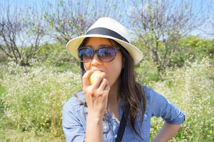
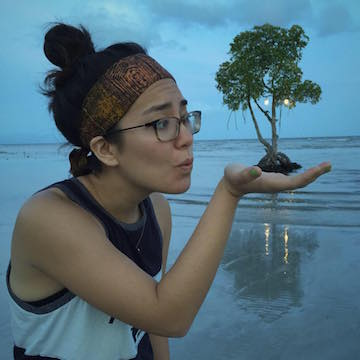
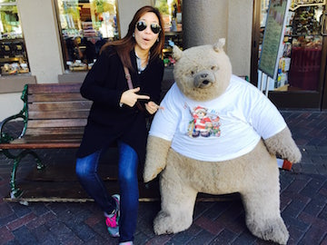
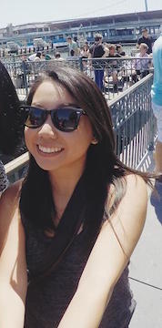

Presenting
The Beautiful Ladies
Shelley Xu - Maid of Honor

Some description of Shelley here.
Alex Wright - Bridesmaid

Some description of Alex here.
Kathryn Choi - Bridesmaid

Some description of Kathryn here.
Helen Chang - Bridesmaid

Some description of Helen here.
Wai Yan Lam - Bridesmaid

Some description of Wai Yan here.